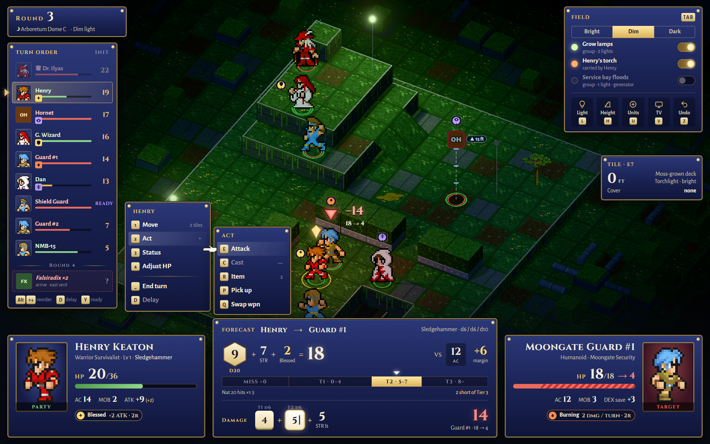
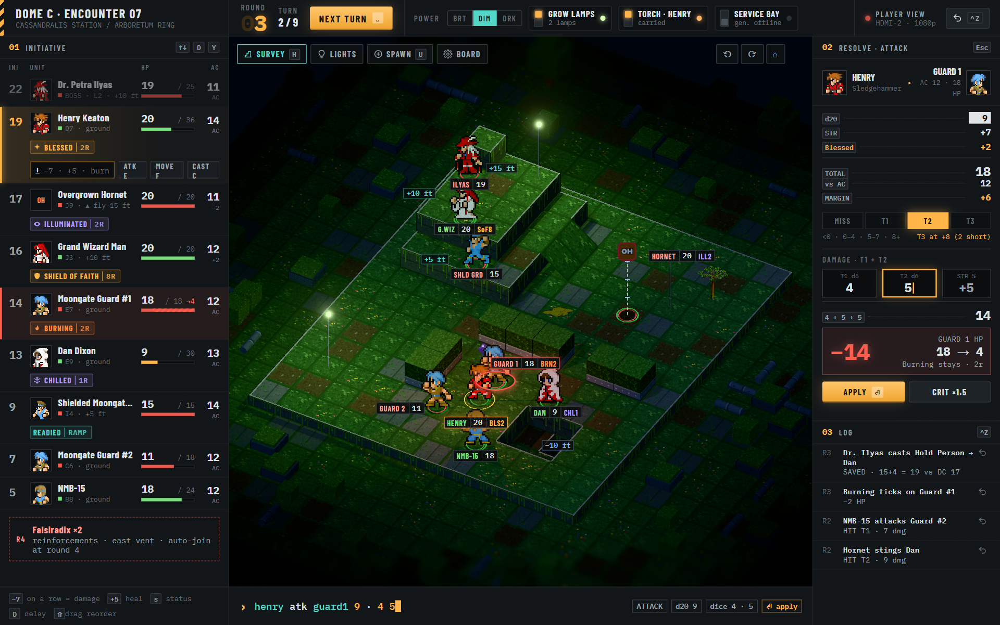
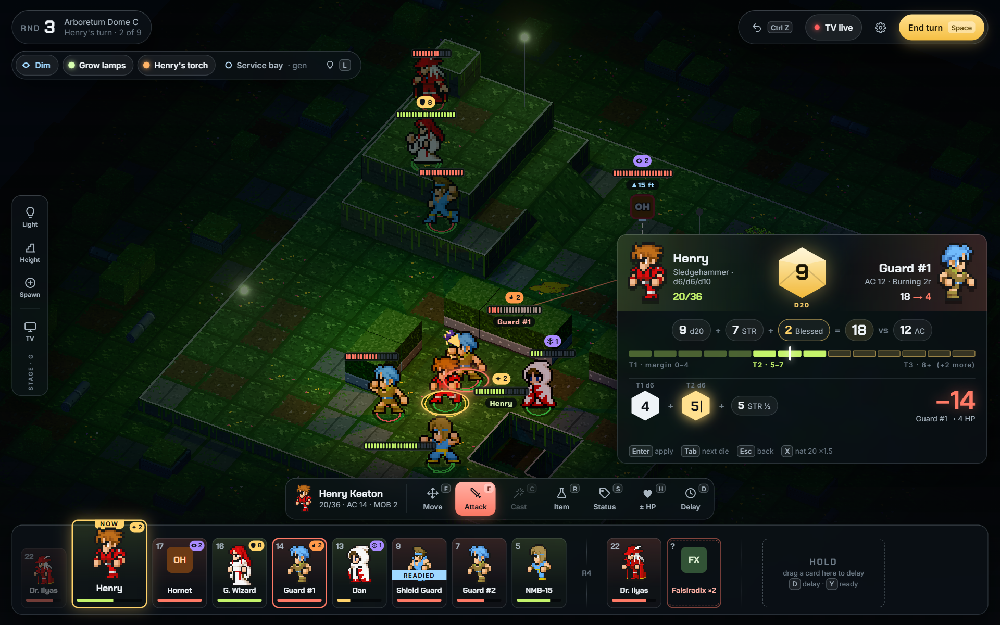

Round 3, Arboretum Dome C. Henry Keaton swings a Sledgehammer at Moongate Guard #1: d20 9 + STR 7 + Blessed 2 = 18 vs AC 12 → margin +6 → Tier 2, dice 4 + 5 (typing) + 5 = 14. Board is the real HD-2D renderer. 1920×1200 at 125% scaling.

A · ChronicleFinal Fantasy Tactics: list menus, turn-order column, attacker/target plates, battle forecast

B · Ops ConsoleStation terminal (no tactics-RPG cues): initiative roster with inline entry, power breakers, calc tape + undo log

C · SpotlightModern tactics (Triangle Strategy / Into the Breach / XCOM): board-first, HP pips on tokens, clash panel, turn rail